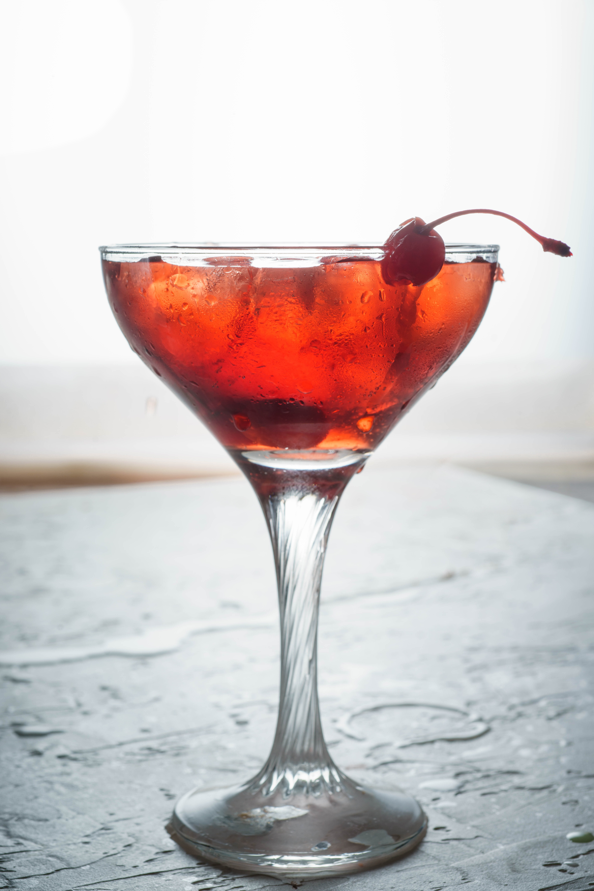
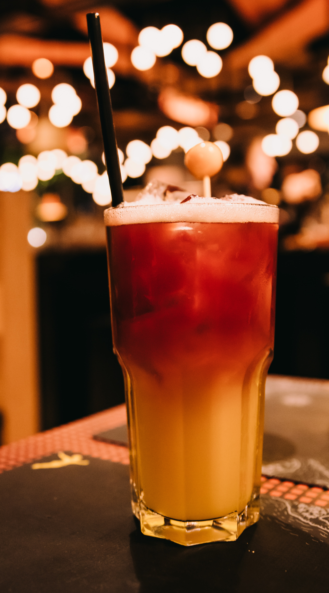

Skip to Main Content
Recipe Gallery
Home
Martini
Old Fashioned
Whiskey Sour
Manhattan
Moscow Mule
Recipe Gallery
Contact Form
All
Gin
Vermouth
Bitters
Vodka
Liqueur
Flora
Rye
Bourbon
Whiskey
Ginger Beer
Other
Black Manhattan
Blackberry Whiskey Sour
Classic Manhattan

Classic Martini
Classic Moscow Mule
Classic Old Fashioned
Classic Whiskey Sour
Classic Whiskey Sour with Egg White
Clint Eastwood
Dark 'N Stormy
Dirty Martini
Espresso Martini
Greenpoint
Irish Old Fashioned
Kentucky Mule
London Mule
Maple Old Fashioned
New York Sour

Scottish Dream Whiskey Sour
Smoking Rosemary Old Fashioned
Zucchini Martini
Previous
Back to Top
Next